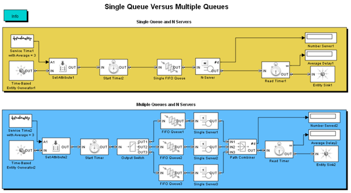

Single Queue Versus Multiple Queues
Contents
Overview
This model compares a single-queue, multiple-server system with a multiple-queue, multiple-server system.
Structure
In this model, both systems share the same average service time and achieve the same throughput. However, the single-queue system exhibits shorter delays than the multiple-queue system.
The comparison of these two systems is the classic “queuing for multiple bank tellers” problem and demonstrates that forming a single line for multiple tellers reduces the average delay, compared to forming one line for each teller.